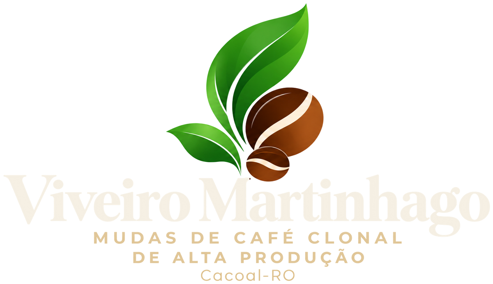

A base de uma grande lavoura.
O maior viveiro de mudas clonais de café de Rondônia. Genética de alta produção, viveiro registrado no RENASEM e envio para todo o Brasil, da pequena propriedade à grande fazenda.
Conheça o viveiro
Veja de cima a estrutura do Viveiro Martinhago em Cacoal: viveiros cobertos, produção organizada por clone e cuidado em cada etapa, da estaca à muda pronta para o campo.
Por dentro do viveiro
Um dos nossos viveiros internos com mudas recém-plantadas. Aqui cada muda cresce protegida sob tela de sombreamento, com acompanhamento da nossa equipe até estar pronta para ir ao campo.
Resultado no campo
Imagens gravadas na propriedade do cliente, com a lavoura já em florada de produção. Esse é o resultado que a muda certa entrega quando vai para o campo.
Depoimentos
Clientes do Viveiro Martinhago contam, com as próprias palavras, como foi a experiência com as nossas mudas. Depoimentos gravados no nosso estande na 13ª Rondônia Rural Show Internacional, feira do agronegócio que recebe produtores do Brasil e do mundo todo.
Rondônia Rural Show 2026 · 13ª ediçãoComo trabalhamos
Cada serviço é contratado separadamente, de acordo com a necessidade da sua propriedade.
Mudas clonais de alto vigor, padronizadas e prontas para o campo. Você retira no viveiro ou combina a logística com a gente.
Valor a consultarAs mudas chegam até você no prazo combinado, com o cuidado de transporte que elas precisam.
Serviço à parte | Valor a consultarNossa equipe faz o plantio com técnica, para a muda entrar no solo do jeito certo e pegar com força.
Serviço à parte | Valor a consultarMudas de alta produtividade
Cada saca colhida lá na frente depende da muda que vai para a cova hoje. Por isso o Viveiro Martinhago trabalha com genética de alta produção, procedência registrada e acompanhamento técnico em todas as etapas.
Clones disponíveis
Trabalhamos com 9 clones de café. Você pode montar a sua lavoura com um ou mais clones, e o contrato registra a quantidade de cada um.
Ficou em dúvida sobre qual clone escolher? O escritório ajuda você a montar a combinação certa para a sua área.
Escolher meus clonesCalculadora de mudas
Informe o tamanho da área e o espaçamento. A conta sai na hora, e você já pode pedir o orçamento dessa quantidade pelo WhatsApp.
2. Espaçamento (rua × planta)
| Espaçamento | Plantas por hectare |
|---|---|
| 2,5 × 0,80 m | 5.000 |
| 3,0 × 0,70 m | 4.761 |
| 3,0 × 0,80 m | 4.166 |
| 3,0 × 1,00 m | 3.333 |
Plantio na prática
Veja como é simples plantar a muda do Viveiro Martinhago. Ela chega formada, com raiz bem desenvolvida e pronta para o campo, o que facilita o trabalho da equipe e acelera o pegamento.
Carregamento
O jeito como as mudas são acomodadas aproveita cada espaço da carroceria. Um caminhão leva uma quantidade grande de mudas com segurança, e o produtor economiza em viagens e transporte.
Cafecau 2026
O Viveiro Martinhago marcou presença na Cafecau 2026, recebendo produtores, técnicos e parceiros para falar de genética, qualidade e produtividade no campo.
Assista à entrevista com o proprietárioA história e a técnica por trás de cada muda. Abre no YouTube.Viveiro registrado
O Viveiro Martinhago é registrado no RENASEM, o Registro Nacional de Sementes e Mudas do Ministério da Agricultura, e conta com engenheiro agrônomo como responsável técnico pela produção.
Como funciona a compra
Um processo simples, com contrato e documentação em dia, para você planejar o plantio com tranquilidade.
Use a calculadora acima ou fale com o escritório pelo WhatsApp. A gente ajuda a escolher o espaçamento e a quantidade certa para a sua área.
O pedido é confirmado com o pagamento da entrada por Pix. Com o comprovante conferido, o seu contrato é efetivado e as suas mudas ficam reservadas.
O contrato traz a quantidade, os clones e o período de remessa e retirada, para você organizar o preparo da área com antecedência.
Informe a data e a placa do veículo com 2 dias de antecedência. As mudas podem ser retiradas em uma ou mais viagens.
Com os dados em mãos, emitimos a nota fiscal, a PTV e o DARE, para a sua carga viajar regularizada.
O saldo é pago antes do carregamento, por Pix ou em dinheiro. Nossa equipe carrega as mudas com cuidado e aproveitamento máximo do espaço.
Compra segura
Transporte de mudas exige documentos. Cuidamos disso para você seguir viagem tranquilo até a propriedade.
Emitida em cada carregamento, com a quantidade de mudas retirada.
Documento obrigatório para transportar mudas, emitido antes da sua carga sair.
Guia de recolhimento estadual emitida junto com a documentação da carga.
Dúvidas frequentes
Com o pagamento da entrada por Pix. Assim que o comprovante é conferido, o contrato é efetivado e as mudas ficam reservadas para a remessa combinada.
Pix ou dinheiro. A entrada garante o pedido, e o saldo é pago antes do carregamento.
Pode. Cada carregamento é agendado com o escritório, e a gente controla o que já foi retirado e o que falta.
Informe a data e a placa do veículo com pelo menos 2 dias de antecedência. Esse prazo é necessário para emitir a nota fiscal, a PTV e o DARE.
Cada bandeja leva 50 mudas. A calculadora já mostra quantas bandejas a sua quantidade ocupa.
Sim. A entrega é um serviço contratado à parte. Fazemos envio para todo o Brasil e temos clientes em todo o país.
Sim. O Viveiro Martinhago tem registro no RENASEM sob o número RO-01868/2021, e o responsável técnico é o engenheiro agrônomo Inaldon Pires de Oliveira.
Clones 025, 08, 156, 88, 04, R22, AS2, G8 e LB15. Você pode combinar mais de um clone no mesmo pedido.
Os espaçamentos mais recomendados são 3,0 × 0,70 m ou 3,0 × 0,80 m, com condução de duas hastes por planta.
Nossas mudas têm alto índice de pegamento, então a necessidade de replantio é rara. A quantidade da calculadora é a que você precisa.
Onde estamos
Cacoal, Rondônia
Toque no botão para abrir a rota no Google Maps direto no seu celular.
Como chegarGaranta sua safra
As encomendas desta safra são limitadas. Fale com a gente pelo WhatsApp e escolha o que você precisa.